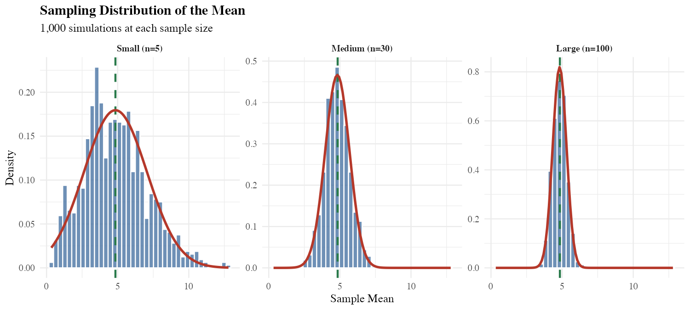
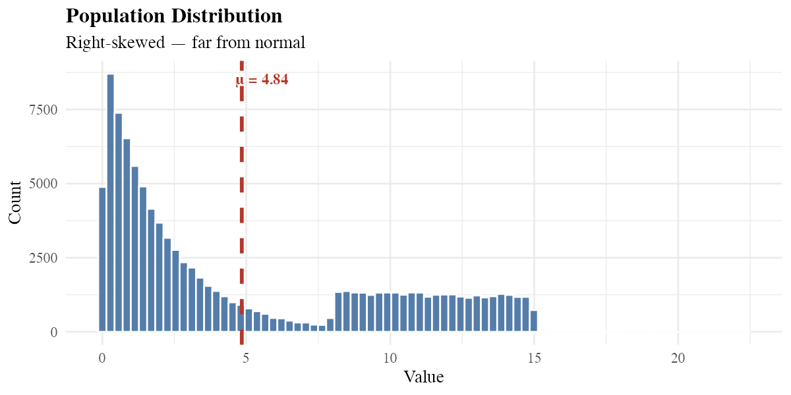

Summer Bootcamp 2026 — Gresham Lab
Summer Research Fellow · Gresham Lab, NYU
Exploring yeast genetics through computation, statistics, and R — one experiment at a time.
View My WorkBackground
This summer I joined the Gresham Lab at NYU for an intensive research bootcamp focused on yeast genetics and genomics. The lab studies how populations of Saccharomyces cerevisiae evolve in response to environmental pressures — using a combination of experimental evolution and quantitative data analysis.
My role has been to build skills in scientific computing and statistics, learning how to move from raw experimental data to meaningful biological insights. Along the way I have picked up R, GitHub, and a much deeper understanding of the statistical methods that underpin modern biology.
Work

A full simulation study demonstrating the Central Limit Theorem. Drawing 1,000 samples from a deliberately skewed population, I show how sample means converge to a normal distribution as sample size grows — and verify the standard error formula numerically.
View Full Notebook
My first R script — assigning variables, performing arithmetic operations, and getting comfortable with the language. Every analysis starts somewhere, and this was mine.
View CodeAdditional experiments and analyses from the bootcamp will appear here as the summer progresses.
Toolkit
Statistical computing and scripting
Publication-quality data visualisation
Reproducible, documented analysis notebooks
CLT, sampling distributions, standard error
Version control and open science
Experimental evolution with S. cerevisiae